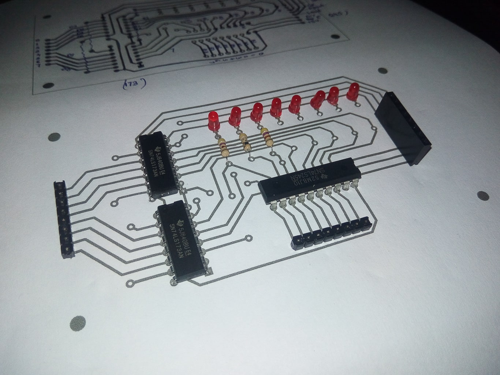
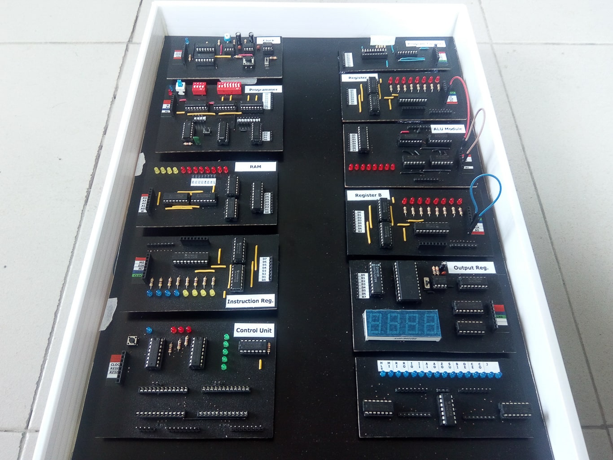
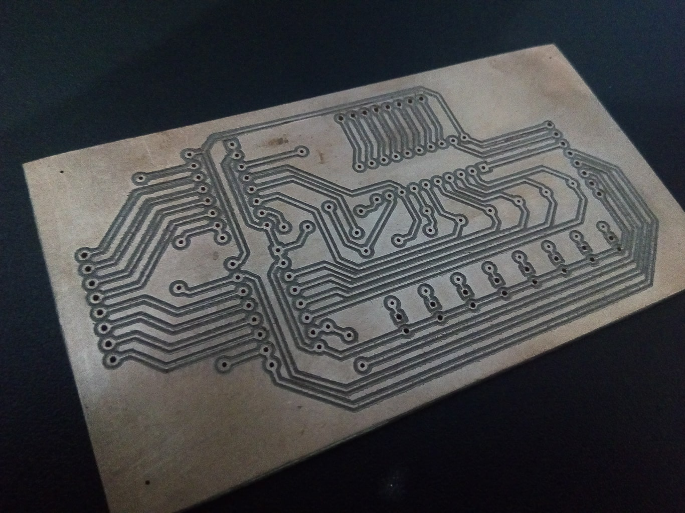

The SAP-1 (Simple As Possible) Computer is an 8-bit educational computer built from discrete
digital logic components based on the SAP-I architecture. The project demonstrates the
fundamental principles of computer architecture by implementing a fully functional processor
capable of executing machine language instructions using custom-designed hardware.
* Designed and built an 8-bit computer based on the SAP-I architecture.
* Designed custom printed circuit boards (PCBs) using Fritzing and fabricated them using a CNC
machine.
* Assembled and soldered individual hardware modules, including registers, ALU, control unit,
memory, and clock circuits.
* Integrated all modules onto a custom motherboard and performed hardware debugging and
validation.
* Implemented a 16-byte memory system supporting nine machine language instructions inspired by
the Intel 8080 instruction set.
* Tested and verified system functionality through machine language programming and execution.
Technologies
Verilog (Design Concepts), Digital Logic Design, Computer Architecture, PCB Design, Fritzing,
CNC Fabrication, Electronics, Soldering, Hardware Debugging
Gallery



Team
 Dilshani Karunarathna
Dilshani Karunarathna
 Nuwan Jaliyagoda
Nuwan Jaliyagoda
 Pasan Tennakoon
Pasan Tennakoon
 Suneth Samarasinghe
Suneth Samarasinghe
 Pubudu Premathilake
Pubudu Premathilake
 Wishma Herath
Wishma Herath
 Mohammed Irfan
Mohammed Irfan
Resources/ Links
- Computer algorithms - Wikipedia
- Building an 8-bit breadboard computer! - Youtube
- 8-bit Computer from discrete ICs - Youtube Video
- https://github.com/DDilshani/peraSAP-I